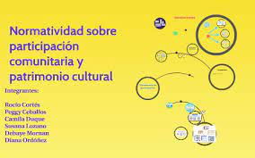

Participación comunitaria en la conservación
La participación comunitaria es un elemento clave en la conservación del patrimonio cultural. Las comunidades locales a menudo tienen un conocimiento profundo y una comprensión de los sitios culturales y su historia. Además, la educación y la concientización sobre la importancia del patrimonio cultural pueden ayudar a fomentar una mayor participación y compromiso. La implicación de la comunidad también puede ayudar a garantizar que la gestión y el mantenimiento de los sitios culturales sean sostenibles y responsables.
